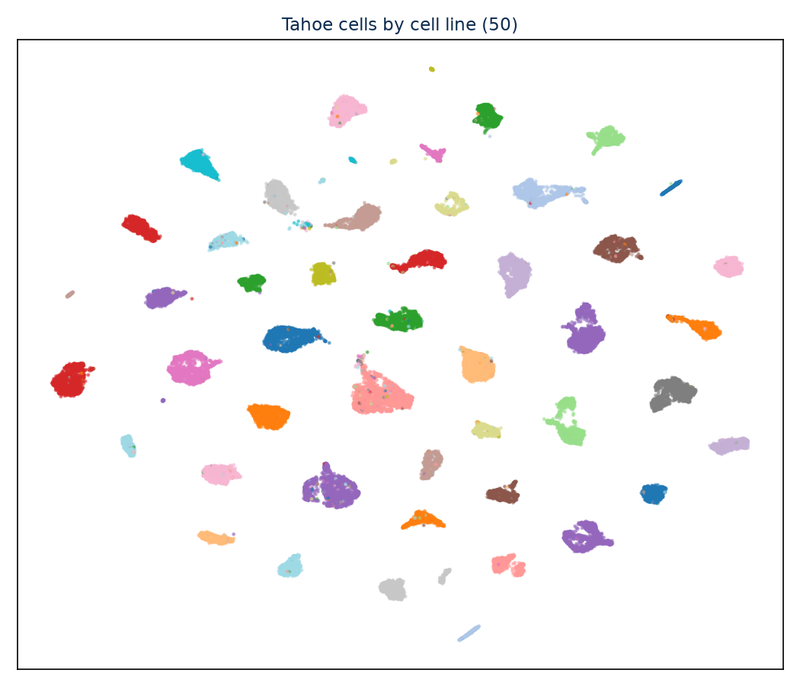

Research

Built an energy-based JEPA world-model predicting how a cell's transcriptomic state changes under a drug intervention, learned entirely in latent space on the Tahoe-100M single-cell dataset. Extended eb-JEPA with a drug-conditioned predictor, anti-collapse regularization, and biology-informed losses, enabling in-silico drug screening. Developed at the World Model Hackathon (Hack The World).
Investigated I-JEPA, a self-supervised method learning representations by predicting missing image regions in latent space as a pretraining strategy for H&E-stained whole-slide image analysis. Pretrained ViT-S/8 encoders on PatchCamelyon and evaluated on linear probing and few-shot classification

Interactive 3D visualization tool projecting ESMFold attention maps (33 layers × 20 heads) onto predicted protein structures in Mol*. Built with Python, React, and FastAPI: ESMFold predicts structure from sequence, attention hooks extract the full [L, H, N, N] tensor with APC correction, and Mol* renders cartoon representations colored by attention intensity.

Developed a semantic segmentation pipeline for histopathology Whole-Slide Images (WSI) using the BCSS dataset. Implemented and benchmarked U-Net, TransUNet, DenseUNet, and nnU-Net architectures, leveraging a pre-trained ResNet-101 encoder for improved feature representation.

Developed a hybrid cross-modal framework translating molecular graphs into human-readable captions. Aligned a GINE graph encoder with Galactica-1.3B LLM via a Q-Former projector. Benchmarked three models: dual-encoder retrieval (SciBERT/RoBERTa), GNN-to-T5 generative, and soft-prompting architectures.

Developed a non-invasive ML screening tool using 800+ patient-reported symptom entries. Applied Jaccard Index for feature selection, reducing 56 features to a high-impact subset of 24. Benchmarked multiple ML algorithms with 10-fold cross-validation and generated interpretable symptom rankings to accelerate diagnosis.